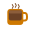
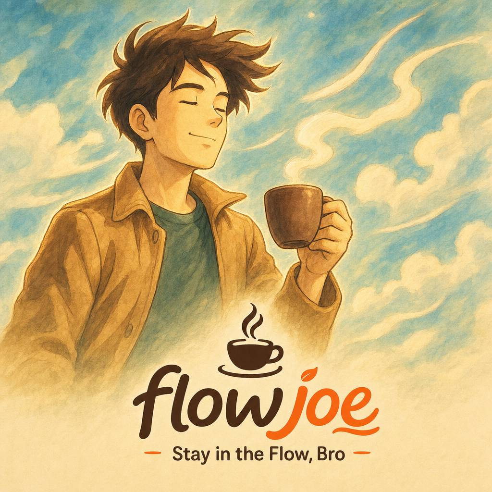

Flow Roast0
🌱 New sapling clears your tree · Roast again keeps it growing
Take a breather — this one's on me. We're going to grow your brain a little: coordinating both hands at once, structure on the left, creative on the right.
The science-y bit: driving both sides in sync lights up both hemispheres across the corpus callosum — bilateral coordination, a tiny cognitive workout hiding in a coffee cup.
Each catch grows the tree in the middle — and it keeps growing, saved for you, so you'll come back to a taller one. Miss what's asked for and lose a ☕ -- out of cups and it's burnt. Those falling cards are your real Flow's names.